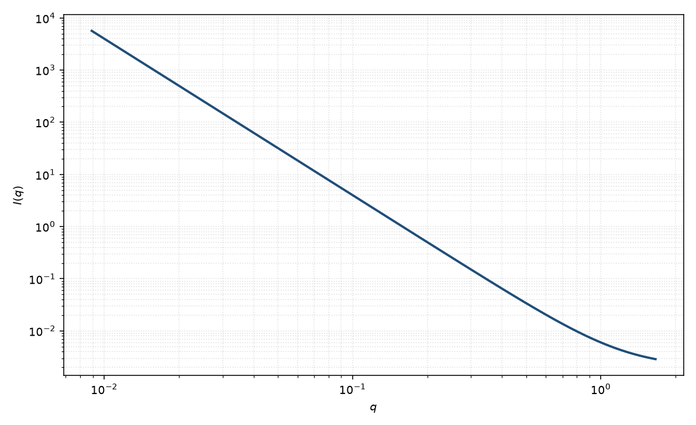

幂律
power law
适用场景
当一段 $q$ 窗口里 $I(q)$ 接近纯幂律、又不想引入 Guinier 转折或界面面积时，用 $I\sim q^{-m}$ 作经验描述。常见于分形区的局部拟合、背景斜率，或只关心有效指数的筛选。
它不是粒子形状：同一指数可来自质量分形、棒/片的中间区、粗糙表面或未扣净的本底。看到直线就写“球形/柱形”是误读。
窗口两端若出现 Guinier 坪或 Porod 平台，应改用 Guinier–Porod、统一模型或分形模型，让转折显式出现。
物理图像
幂律来自实空间相关函数的标度：若 $\gamma(r)\sim r^{D-3}$（有限区间），则 $I(q)\sim q^{-D}$。$m$ 只是这段标度的指数，没有唯一几何解释。
取向平均的薄棒中间区约 $q^{-1}$，薄片约 $q^{-2}$，光滑面约 $q^{-4}$。这些是渐近，不是在全 $q$ 上的纯幂律。
示意图

核心公式
纯幂律加本底
$$I(q)=A\,q^{-m}+B.$$$A$ 吸收衬度与前置因子，$m$ 为有效指数。本模型不引入特征长度。
参数表
| 参数 | 符号 | 含义 | 单位 | 典型范围 |
|---|---|---|---|---|
| 幅度 | $A$ | 幂律前置因子 | 与强度单位一致 | 由窗口与绝对标定 |
| 指数 | $m$ | 有效幂律指数 | 无量纲 | 通常 $1$–$4$ |
| 标度 / 本底 | $\mathrm{scale}$, $B$ | 前置因子与常数本底 | 与强度单位一致 | 实验相关 |
拟合注意
取向：粉末棒/片的经典指数只在“无限长/无限宽”中间区成立；有限尺寸会在两端离开纯幂律。
多分散把转折抹圆，使有效 $m$ 随窗口漂移。磁性通道可以有不同的有效指数，若磁化分布更光滑或更粗糙。
可辨识性：$m$ 与 $B$、窗口选择强相关。不要用全 $q$ 一段直线去概括 Guinier+Porod；那是 Guinier–Porod 或统一模型的工作。
相近模型
参考文献
- Guinier, A.; Fournet, G. Small-Angle Scattering of X-rays. Wiley: New York, 1955.
- Schmidt, P. W. Small-angle scattering studies of disordered, porous and fractal systems. J. Appl. Cryst. 1991, 24, 414–435. DOI: 10.1107/S0021889891003400